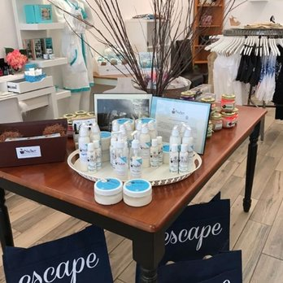
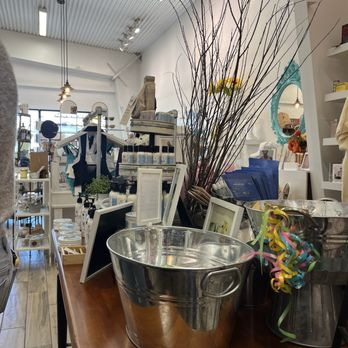
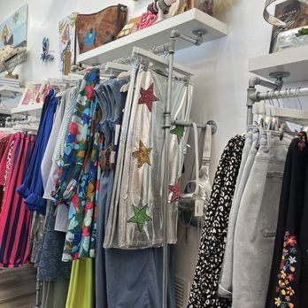
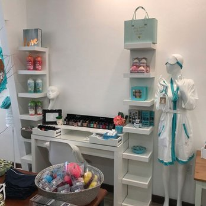
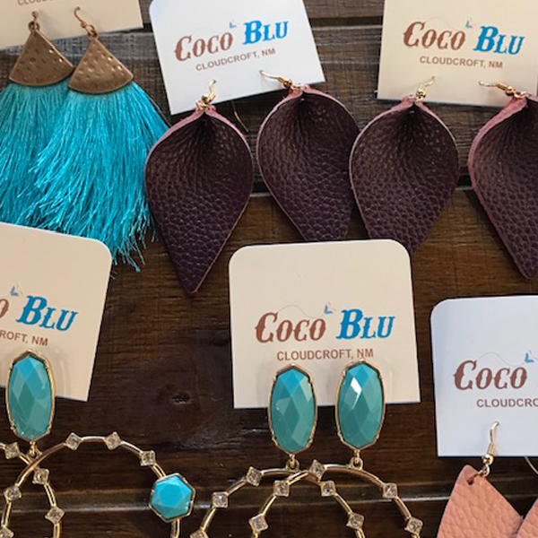

Cloudcroft’s Fashion Boutique
CoCo Blu is one of the clearest boutique-led shopping stops in Cloudcroft. Founded by Carolina Byers in May 2018, the shop frames itself as a women’s boutique that outfits customers “from head to tootsies” — a useful shorthand for the range of merchandise inside.
Compared with the more general gift stores and galleries along Burro Avenue, CoCo Blu reads as a true boutique. The product mix covers clothing, shoes, jewelry, handbags, beauty products, accessories, and home accents — all curated toward a style-driven shopping experience rather than souvenir browsing.
The shop sits on Little Glorietta Avenue and appeals most to visitors looking for a fashion-specific stop. Customer service is part of the pitch, and the atmosphere suggests a place where shoppers browse complete outfits and accessories together rather than individual items off a shelf.

Inside CoCo Blu

True Boutique Identity
CoCo Blu is not a general gift shop. It reads as one of Cloudcroft’s most focused fashion-and-accessories stops, with a curated product mix that covers clothing, shoes, jewelry, handbags, beauty, and home accents under one roof.
Founder-Led Since 2018
Carolina Byers opened CoCo Blu in May 2018, making it a relatively recent but established entrant in the Cloudcroft retail mix. The boutique rounds out the town’s shopping scene with a fashion-specific identity.
Shop Online Too
Unlike many Cloudcroft shops, CoCo Blu maintains an online store through its official website. Visitors who discover the boutique in person can continue shopping after they leave the mountains.



Visit CoCo Blu
Everything you need to know before you go.
Location
94 Little Glorietta Ave, Cloudcroft, NM 88317. Just off the main village area — look for the teal storefront with the CoCo Blu sign.
Hours
Current hours should be checked directly. Follow @cocoblunm on Instagram or call 575-682-3039 before visiting.
Contact
Phone: 575-682-3039
Email: c_blu@icloud.com
Web: cocoblunm.com
Good to Know
This is a women’s boutique, not a general gift store. Hours may vary seasonally — check directly before visiting. Online shopping is available through the official website for items you may have missed in person.
Fashion and Accessories in the Mountains
CoCo Blu brings a true boutique experience to Cloudcroft — clothing, shoes, jewelry, handbags, beauty products, and home accents curated from head to tootsies. Worth a stop on Little Glorietta Avenue.